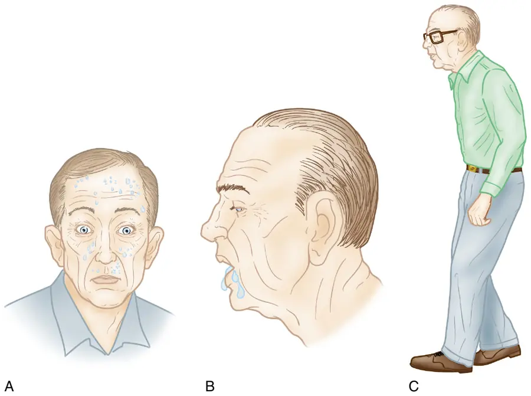

نسخه استخراجشده؛ ترجمه یا تأیید علمی انجام نشده است. وضعیت: captured
خانم ۷۲ سالهای با قدمهای کوتاه و کشیده وارد میشود. دست راستش در حال استراحت میلرزد، صورتش بیحالت است و آب دهانش از گوشهی لب راه افتاده. «کاربیدوپاـلوودوپا» میخورد. کار را چه ساعتی شروع کنی؟

پارکینسون بیماری پیشروندهی نورونهای دوپامینساز مغز است. علائم وقتی ظاهر میشوند که حدود ۶۰ تا ۸۰٪ دوپامین این نورونها از دست رفته باشد.
دندانپزشک گاهی اولین کسی است که این نشانهها را میبیند؛ بیمار تشخیصدادهنشده را به پزشک ارجاع بده.
هدف داروها بالا بردن دوپامین مغز است. هر کدام نکتهی دندانپزشکی خودش را دارد.
داروهای پارکینسون مغز را تضعیف میکنند؛ آرامبخشی که تو تجویز کنی اثرش جمع میشود.
اشتباه رایج: «بیمار آب دهانش میریزد، پس دهانش خشک نیست.» ریزش بزاق از بلع کم است؛ خود داروها اغلب خشکی دهان میدهند. خشکی یعنی گیر ضعیف دندان مصنوعی و پوسیدگی ریشه: جایگزین بزاق و فلوراید موضعی بده.
سفتی و لرزش مسواک زدن را سخت میکنند. توانایی بیمار را با نمایش بسنج؛ مسواک Collis curve، مسواک برقی، کمک مراقب و کلرهگزیدین، و فاصلهی کوتاهتر فراخوان.
نوع سؤال: ساخت کلمه · 7 خانه
حروف منبع: ا · د · م · و · ی · ن · پ